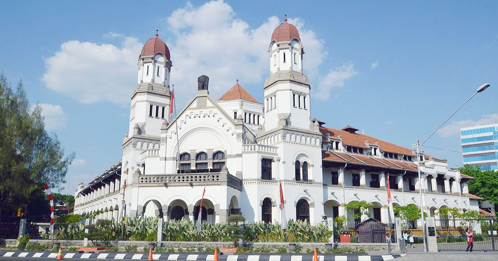
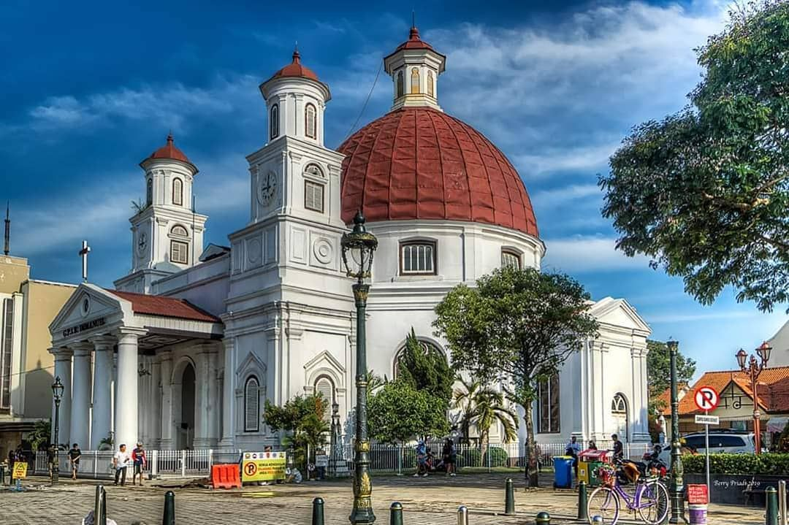

Kota Semarang adalah ibu kota provinsi Jawa Tengah, Indonesia. Kota
ini adalah kota metropolitan terbesar kelima di Indonesia setelah
Jakarta, Surabaya, Bandung, dan Medan.
Sejarah
Sejarah Semarang berawal kurang lebih pada abad ke-6 M, yaitu daerah
pesisir yang bernama Pragota (sekarang menjadi Bergota) dan
merupakan bagian dari kerajaan Mataram Kuno. Daerah tersebut pada
masa itu merupakan pelabuhan dan di depannya terdapat gugusan
pulau-pulau kecil. Akibat pengendapan, yang hingga sekarang masih
terus berlangsung, gugusan tersebut sekarang menyatu membentuk
daratan. Bagian kota Semarang Bawah yang dikenal sekarang ini dengan
demikian dahulu merupakan laut. Pelabuhan tersebut diperkirakan
berada di daerah Pasar Bulu sekarang dan memanjang masuk ke
Pelabuhan Simongan, tempat armada Laksamana Cheng Ho bersandar pada
tahun 1435 M. Di tempat pendaratannya, Laksamana Cheng Ho mendirikan
kelenteng dan masjid yang sampai sekarang masih dikunjungi dan
disebut Kelenteng Sam Po Kong (Gedung Batu).
Pada akhir abad ke-15 M ada seseorang ditempatkan oleh Kerajaan
Demak, dikenal sebagai Pangeran Made Pandan (Sunan Pandanaran I),
untuk menyebarkan agama Islam dari perbukitan Bergota. Dari waktu ke
waktu daerah itu semakin subur, dari sela-sela kesuburan itu
tumbuhlah pohon asam yang berjarak antara satu sama lain
(jarang-jarang) (bahasa Jawa: asem arang), sehingga memberikan gelar
atau nama daerah itu yang kemudian menjadi Semarang.
Geografi
Kota Semarang adalah salah satu kota penting yang terletak di
pesisir utara Jawa dan sebagai hub utama penghubung Jakarta–Surabaya
dan kota–kota di pedalaman selatan Jawa (Surakarta dan Yogyakarta).
Kota Semarang memiliki ketinggian dari 2 meter bawah permukaan laut
hingga 340 meter di atas permukaan laut dengan kemiringan lereng
0%–45%. Kota Semarang merupakan kota yang memiliki kondisi topografi
yang unik berupa wilayah dataran rendah yang sempit dan wilayah
perbukitan yang memanjang dari sisi barat hingga sisi timur Kota
Semarang. Wilayah dataran rendah di Kota Semarang sangat sempit.
Wilayah dataran rendah pada wilayah barat Kota Semarang hanya
memiliki lebar 4 kilometer dari garis pantai, sedangkan pada wilayah
timur Kota Semarang wilayah dataran rendah semakin melebar hingga 11
kilometer dari garis pantai. Wilayah dataran rendah ini merupakan
dataran banjir dari sungai-sungai besar yang mengalir di Kota
Semarang, seperti Kali Garang (Banjir Kanal Barat), Kali Pengkol,
dan Kali Bringin. Wilayah dataran rendah ini membentang di sisi
utara Kota Semarang dan hampir mencakup 40% total wilayah Kota
Semarang. Wilayah dataran rendah ini dikenal sebagai kota bawah
(Semarang Ngisor), sekaligus sebagai pusat aktivitas perekonomian
kota. Dengan kondisi demikian, wilayah kota bawah sering kali
dilanda banjir tahunan dan puncaknya ketika musim penghujan.
Sejumlah wilayah khususnya Semarang Utara, banjir ini kadang juga
disebabkan luapan air pasang laut (banjir rob). Wilayah perbukitan
di Kota Semarang ini membentang di sisi selatan. Perbukitan ini
merupakan bagian dari rangkaian formasi pegunungan utara Jawa yang
membentang dari Banten hingga Jawa Timur. Wilayah perbukitan di Kota
Semarang dikenal sebagai kota atas (Semarang Dhuwur). Wilayah
perbukitan ini juga merupakan kawasan hulu dari sungai-sungai besar
yang mengalir di Kota Semarang. Wilayah kota atas juga bagian dari
bentang kaki gunung api Ungaran, yang terletak pada sisi selatan
Kota Semarang.
Kota bawah ini meliputi Kecamatan Tugu, Semarang Barat, Semarang
Tengah, Semarang Selatan, Semarang Timur, Gayamsari, Pedurungan,
Genuk, dan Semarang Utara. Kota bawah ini merupakan kawasan pusat
kota dan jantung perekonomian Semarang. Kota bawah juga berperan
sebagai downtown, antara lain untuk pusat hiburan, perdagangan,
pelayanan publik, dan pemerintahan. Kondisi topografi kota bawah
yang mendukung, mendorong pertumbuhan ekonomi sangat cepat dan
timbul perluasan wilayah perkotaan. Kota atas ini meliputi Kecamatan
Gajahmungkur, Candisari, Banyumanik, Tembalang, Gunung Pati,
Ngaliyan dan Mijen. Kini, wilayah kota atas merupakan pusat
pertumbuhan baru di Kota Semarang. Salah satu sektor wilayah yang
memiliki pertumbuhan yang spesifik terhadap differensiasi pusat
aktivitas dan aglomerasi penduduk adalah sektor
Banyumanik–Tembalang. Sarana prasara yang mendukung, sangat
mendorong pertumbuhan dan minat investasi pada wilayah tersebut.
Pertumbuhan pada wilayah ini ditandai dengan berkembangnya
permukiman, munculnya pusat perekenomian baru, dan eksistensi gedung
pencakar langit. Salah satu alasan wilayah ini berkembang juga
merupakan hasil kebijakan Pemerintah Kota Semarang memindahkan UNDIP
dari Pleburan ke Tembalang, sebagai upaya pemerataan penduduk di
Kota Semarang. Strategi ini juga dilakukan pada pemindahan kampus
UNNES dari Kelud Raya ke Gunung Pati.
Wisata
Pariwisata menjadi salah satu pendukung perekonomian kota Semarang.
Bangunan lama peninggalan masa penjajahan Belanda, terdapat di
beberapa sudut kota. Pariwisata dan kuliner juga menjadi suatu
simbol atau kekhasan dari kebanyakan wilayah di Indonesia, termasuk
di kota Semarang. Selain bangunan lama, wisata religi juga bisa
ditemukan di kota ini. Perpaduan budaya Jawa dan Tionghoa juga
menjadi salah satu keunikan kota Semarang.

Foto Lawang Sewu
Salah satu tempat wisata di kota Semarang ialah Lawang Sewu, yang
berasal dari bahasa Jawa, artinya seribu pintu. Ini merupakan
bangunan peninggalan Belanda, yang digunakan sebagai kantor pusat
perusahaan kereta api yang memiliki banyak pintu, sehingga disebut
Lawang Sewu. Bangunan ini dibangun secara bertahap dari 1904 hingga
1918. Kini dijadikan sebagai museum tempat menyimpan koleksi kereta
api di Indonesia.
Foto Masjid Agung Jawa Tengah

Foto Gereja Blenduk
Tempat wisata keagamaan dapat ditemukan di kota Semarang. Bangunan
masjid yang besar seperti Masjid Agung Jawa Tengah, Masjid
Baiturrahman Semarang, dan Masjid Kauman Semarang, menjadi wisata
keagamaan yang banyak dikunjungi wisatawan di kota Semarang.
Kemudian, Gereja Blenduk dan Gereja Katedral Semarang dengan
bangunan khas Belanda juga menjadi salah satu wisata keagamaan di
Semarang. Kemudian Klenteng Sam Po Kong dengan nuansa Tionghoa
menjadi wisata keagamaan lainnya di kota Semarang. Berbagai macam
wisata lainnya dapat ditemukan di kota ini.